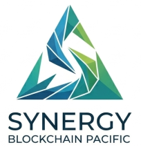
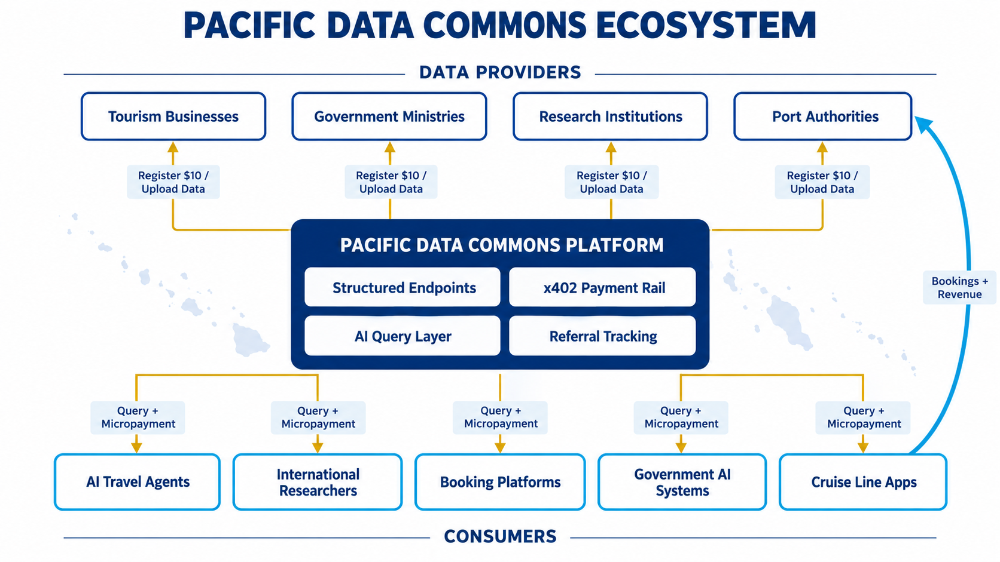
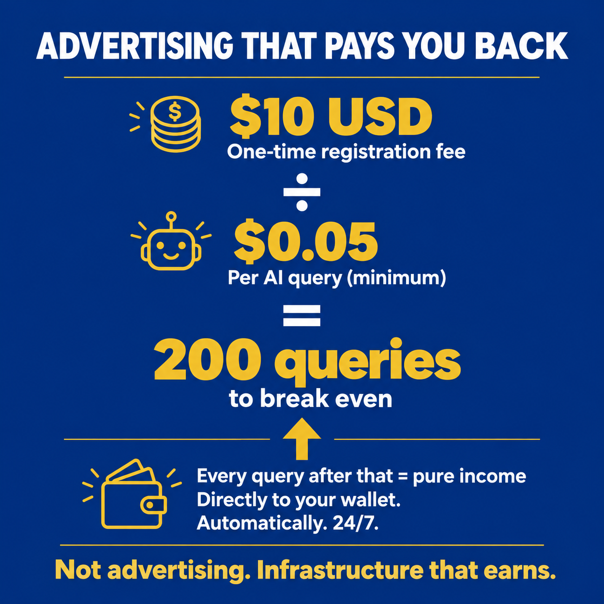
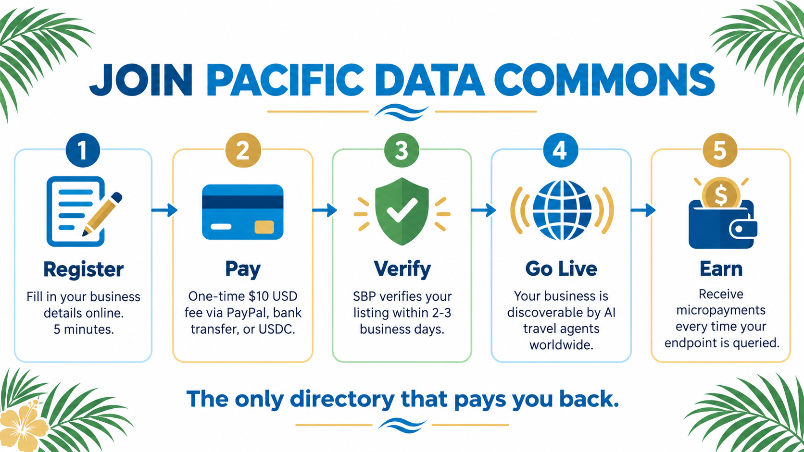
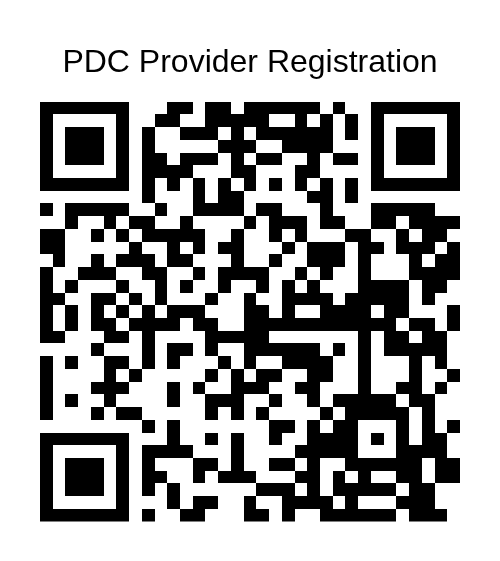

Digital Infrastructure for Samoa Tourism
Prepared for the Samoa Tourism Authority
Pacific Data Commons (PDC) is a sovereign digital infrastructure platform built in Samoa by Synergy Blockchain Pacific. It enables tourism businesses, government agencies, and researchers to make their services discoverable to AI travel assistants, booking platforms, and digital marketplaces worldwide — 24 hours a day.
PDC has already transacted over $200 USD in live data queries since launch, with 69 active endpoints registered on the GoPlausible global AI marketplace. This proposal outlines how the Samoa Tourism Authority can leverage PDC to increase the visibility of Samoan tourism providers to the next generation of AI-powered travel planning, while retaining the economic value of tourism transactions within Samoa and the Pacific.
International travellers increasingly use AI assistants to plan and book holidays. When someone asks an AI travel agent "what accommodation is available in Samoa" or "what activities can I do in Apia," the AI queries structured data directories — not websites, not TripAdvisor, not Google. If Samoan businesses are not in those directories, they are invisible to that traffic.
Currently, platforms that dominate AI travel data — Sabre, Amadeus, Booking.com — charge tourism providers 18–25% commission on every booking. For a Samoan beach fale earning $80 per night, that is $16–20 per booking going to an overseas platform.

The PDC ecosystem connects Pacific data providers directly to global AI consumers — with value flowing back to the Pacific.

A PDC listing is not passive advertising. Every time an AI agent queries your endpoint — searching for accommodation in Samoa, activities in Apia, or transport options for cruise passengers — you receive a micropayment directly to your wallet.
At $0.05–$0.25 per query, a provider whose endpoint is queried just 200 times has already recovered their $10 registration fee. Every query after that is pure income — automatic, on-chain, 24 hours a day.
No other advertising platform pays the advertiser. PDC does.

Simple self-service registration — 5 minutes to complete, no technical knowledge required.
SBP verifies every listing — quality control ensures the directory remains trustworthy for AI agents and travellers.
Permanent visibility — one payment, listed forever, discoverable 24/7 by AI travel agents worldwide.
We understand the Samoa Tourism Authority has expressed concern about blockchain and cryptocurrency. We want to address this directly.
Payments for tourism providers and their customers are entirely conventional. Businesses register and receive payments via PayPal, direct bank transfer to a Samoan Commercial Bank account, or standard card payment. There is no requirement for providers or customers to hold or understand cryptocurrency.
The blockchain layer operates invisibly in the background for one specific purpose: enabling AI agents to pay for data queries automatically, instantly, and at very low cost. This is how AI systems transact internationally — they cannot use credit cards or bank accounts. Blockchain micropayments are the emerging standard for AI-to-AI transactions, adopted by Coinbase, Google, and major technology platforms globally.
To compete for AI-generated travel traffic, accepting this payment method is necessary — just as accepting Visa and Mastercard was necessary when international card payments became the norm. PDC is building the Pacific's own rail for this, so the fees stay in the region.
Samoa receives thousands of cruise ship passengers annually through Apia port. These passengers typically have 6–8 hours ashore actively looking for activities, transport, food, and cultural experiences.
When a cruise ship arrives in port, the vessel's AI concierge or the cruise line's passenger app can query PDC for what is available in Apia that day. Providers listed on PDC with booking links and WhatsApp numbers receive direct, real-time referrals from cruise passengers.
The PDC referral tag tracks how many bookings originated from cruise passenger queries — creating documented evidence of value. This connects directly to Samoa's One Maritime Window system, creating a potential integration where PDC automatically surfaces relevant providers when a cruise vessel is confirmed in port.
No global booking platform currently does this for Samoa. PDC can.
Endorse PDC as the recommended AI-ready directory for STA-registered tourism providers.
Sponsor registrations for verified STA members — cover the $10 USD fee for providers already on the STA register.
Collaborate on a cruise liner pilot — develop a PDC integration surfacing Samoan providers to cruise passenger apps when vessels are in port.
Co-brand the tourism directory — the PDC tourism section can carry STA branding as the official verified Samoa tourism data layer.
The provider registration form is live now. Scan the QR code or visit the link below to see exactly what a Samoan tourism provider experiences when they join PDC.
